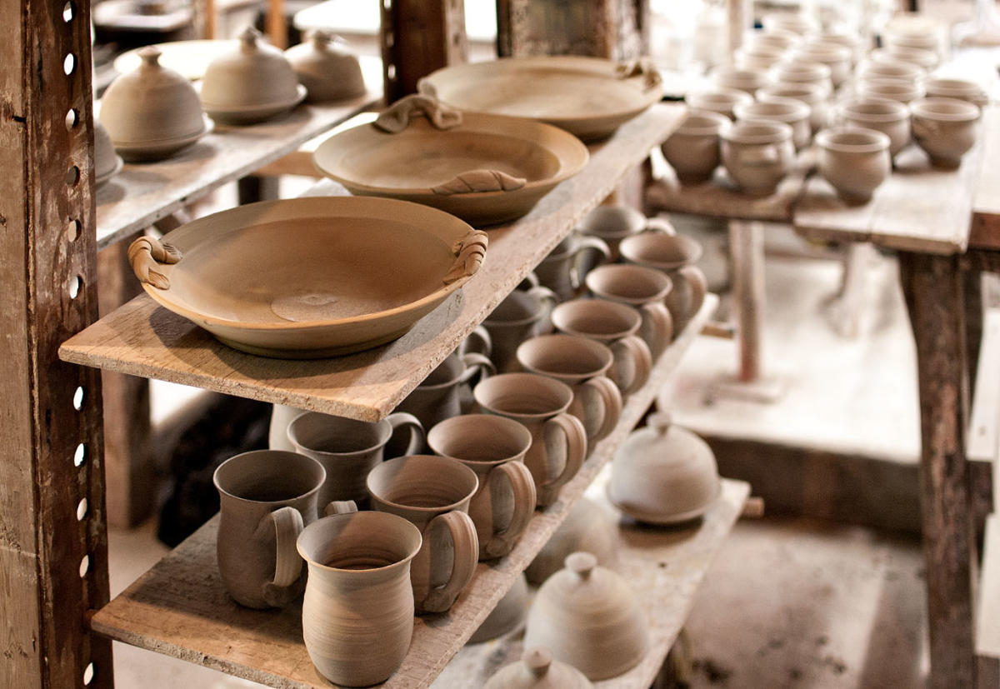

ANAHATA


Anahata surge del nombre en sánscrito del
cuarto chakra que se encuentra ubicado en el
pecho, este comúnmente se relaciona con el
amor, la compasión y toda la energía
emocional.
Cada chakra es representado por un
elemental y en el chakra anahata, prevalece la
energía de la tierra.
El nombre anahata representa la idea de que la
cerámica no es solo un objeto físico, sino
también un medio para expresar emociones y
sentimientos a través de la creación de formas
y texturas.